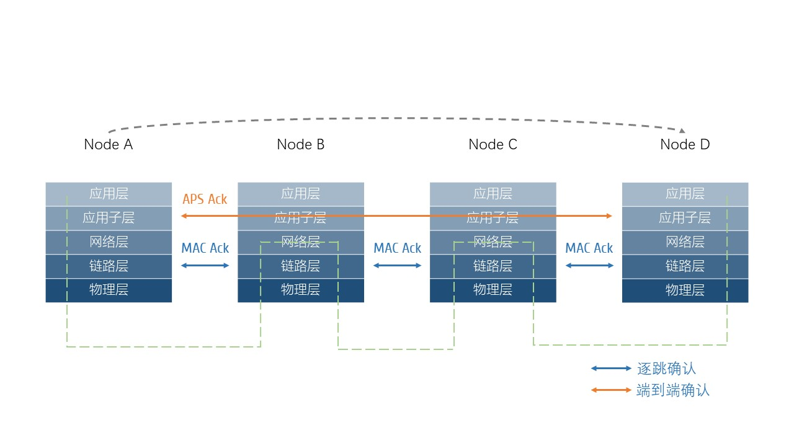

WSN协议技术
物联网中的通信技术
- 广域网
- WAN-Wide Area Network
- 城域网
- MAN-Metropolitan Area Network
- 局域网
- LAN-Local Area Network
- 个域网
- PAN-Personal Area Network->无线个域网WPAN-Wireless PAN->低速无线个域网LR-WPAN->WSN
- 其它
- 蓝牙、WIFI、红外等等
- 授权使用或免费使用
- 特点
- 大部分通信技术都需要[基础设施]的支持；网络拓扑结构相对集中，容易出现[单点故障]导致网络瘫痪；
IEEE 802.15.4
- IEEE 802
-

- IEEE is the world's largest technical professional organization dedicated to advancing technology for the benefit of humanity.
- 又称为LMSC（LAN /MAN Standards Committee， 局域网/城域网标准委员会），致力于研究局域网和城域网的物理层和MAC层中定义的服务和协议，对应OSI网络参考模型的最低两层（即物理层和数据链路层）；
- IEEE 802.15.4
- 针对低速无线个域网LR-WPAN制定标准；
- 目标：低能量消耗、低速率传输、低成本；
- 内容：物理层协议和MAC层协议；
- WSN的底层协议就是采用的IEEE 802.15.4；
Zigbee/CSA连接标准联盟
- 介绍
- 成立于[2002年8月]，由英国Invensys公司、日本三菱电气公司、美国Motorola公司、荷兰飞利浦半导体公司发起，现成员已达四百余家；
- 成员最多的在美国；其次是中国；
- 2021年5月11日——由数百家公司组成，共同创建、维护和提供物联网(IoT)全球开放标准的Zigbee联盟宣布更名为 "CSA连接标准联盟"(CSA联盟)；
- 主要工作：完善标准、修订漏洞或缺陷，同时补充新的特性；促进行业发展，比如开展各种学术交流；会议；培训等；产品认证和平台认证；
- [思考]为什么要认证？
- Zigbee协议
- CSA连接标准联盟下的一个技术分支；
- 最新版本是[3.0]，是一个强制标准；
- 目标
- 低功耗的前提下，开发易于部署、低复杂度、低成本、低速率、短距离、自组网的无线网络；
- 技术标准
- 4个层面：物理层、MAC层、网络层和应用层；
- 物理层和MAC层由 IEEE 802.15.4制定；
- 网络层和应用层由 Zigbee联盟负责定义；
- Zigbee协议栈
- 德州仪器 Texas Instruments 的Z-stack：免费；半开源；配合IAR使用，适合初学者；
- 飞思卡尔 Freescale 的beestack：收费；不开源；
- Zigbee芯片
- CC2430/CC2431：首个单芯片的zigbee解决方案；首个真正意义上的片上系统-System on Chip；
- CC2530/CC2531：24系列的升级版本；4个闪存版本-32/64/128/256KB；应用最为广泛；
- CC2538：高端high-end芯片；通常作为WSN中协调器节点；其它节点采用2530系列；
- 技术特点
- 低功耗：发射功率仅为1mW；2节5号电池可以维持工作6个月到2年；
- 传输速率低：所以功耗小
- 成本低：协议免专利费；模块成本价钱已经跌破1美元；
- 时延短：适合时延苛刻的控制系统；设备搜索时延30ms；休眠激活时延15ms；接入信道时延15ms；
- 容量大： 1个星型网络：1个主设备；254个从设备；1个区域：100个zigbee网络；理论上，MESH网络中节点数目可达65536个；
- 可靠：CSMA/CA碰撞避免；完全确认传输模式；
- 安全：CRC；AED-128；
- Zigbee体系结构
-
应用子层、安全、zigbee设备对象等 应用层 Zigbee联盟 路由、路由维护、子节点管理 网络层 CSMA/CA、ACK、Retry、Scan 链路层 IEEE 802.15.4 射频管理、调制、解调 物理层 - 表1 Zigbee体系结构
- 常见技术对比
-
距离 速率 功耗 网关 特点 应用 Bluetooth 2-30m 1Mbps 需要 近距离；单节点 通信、汽车、多媒体、工业、医疗、教育 Zigbee 50-300m 250kbps 5mA 需要 低速；低功耗；低成本；多节点 远程控制、嵌入式 WIFI 100-300m 300Mbps 10-50mA 否 竞争网络资源 无线上网、OA、PDA IR 100-300m 300Mbps 10-50mA 否 点对点；近距离；LOS 近距离遥控；万能遥控 - 表2 常见技术对比
- Zigbee在智能家居中的应用
物理层PHY协议
- 信道
- 868Mhz：1个信道，ch0，868.3Mhz；
- 915Mhz：10个信道，ch1-ch10；频率间隔2Mhz；906Mhz + 2Mhz *（ k-1 ）， k=1,…,10；
- 2.4Ghz：16个信道，ch11-ch26；频率间隔5Mhz，2405Mhz + 5Mhz *（ k-11 ），k=11,…,26 [同WIFI的冲突]
-
频率 速率 信道 地区 868Mhz 20Kbps ch0 欧洲 915Mhz 40Kbps ch1-ch10 北美 2400Mhz 250Kbps ch11-ch26 全球范围 - 表3 信道划分
- 帧结构
- 前导码：32个0；用于收发器/通信双方同步
- SFD-Start Frame Delimiter，表示同步结束，数据报开始传输
- PSDU-PHY service data unit，物理层服务数据单元，即数据
- 中间的物理帧头是1个字节，其中高7位表示物理帧的长度，以字节位单位
- [思考]物理帧的最大长度是多少字节？
-
4 byte 1 byte 1 byte 变长 前导码 SFD 帧长度 7 bit 保留位1 bit PSDU 同步码 物理帧头 PHY负载 - 表4 物理层帧结构
MAC层协议
- 概述
- 处理所有对物理层的访问
- 提供：MAC数据服务、MAC管理服务
- 通用帧结构
- 帧控制域：帧类型定义和其它控制标志
- 序列号：帧唯一的标识号
- 目标PAN/源PAN：接收/发送设备的唯一标识
- 目标地址/源地址：接收/发送设备的地址；不同的寻找模式对应不同类型的地址
- MHR：帧头
- MFR：帧尾[帧的结构一般都由头、尾和数据构成；
- 帧类型：由帧控制决定
- 信标帧beacon
- 数据帧data
- 确认帧ACK
- MAC命令帧command
- 
- 图1 帧的确认
-
2 byte 1 byte 2 byte 2/8 byte 2 byte 2/8 byte 变长数据 2 byte 帧控制 序列号 目标PAN 目标地址 源PAN 源地址 帧负载 FCS 地址域 MHR MAC负载 MFR - 表5 MAC通用帧结构
节点类型
- 协调器节点 Coordinator - ZC
- 是网络的第一个设备；负责网络的创建维护、信道选择、节点地址分配、数据转发；是整个WSN的核心；
- 为网络选定信道和16 bit的PID(PAN ID)并启动网络；
- 为其它节点分配网络地址，节点间通过网络地址相互通信[DHCP]；
- [思考]协调器的地址由谁分配？
- [思考]既然已经有了信道了，为什么还需要PID？
- 路由器节点 Router - ZR
- 网络拓扑管理；扩大覆盖范围；
- 节点进/出网管理；
- 转发/路由数据包；
- 主电源供电；
- 也可作为普通节点使用；
- 终端节点 End-Device - ZED
- 网络的最末端；采集数据；不能转发数据；一般和父节点/路由器通信，不直接和协调器通信；
- 终端节点可以挂在路由器下，也可以挂在协调器下，根据实际通信情况而定；
- 睡眠或唤醒
- 电池供电
- 总结说明
- 一个WSN有一个协调器
- 一个协调器最多可以挂256个路由器节点
- 一个路由器节点最多可以挂256个终端节点
- 一个WSN最多可以有256*256个节点，即216个节点；
-
coordinator router end-device there can be only ONE message routing leaf nodes always 0x0000 can also serve as end device can be sleepy node trust center,network manager cannot be sleepy must has a parent act as router live with the network parent responsibility FFD-full function device FFD-full function device RFD-reduced function device - 表6 brief summary